Architecture cible
Infrastructure · mycluster
IP Virtuelle flottante (VIP)
192.168.1.100/24
▼ bascule automatique ▼
NŒUD MAÎTRE
🖥️
node1
192.168.1.10/24
pacemaker
corosync
VIP active ici
apache2
COROSYNC
heartbeat
heartbeat
NŒUD ESCLAVE
🖥️
node2
192.168.1.11/24
pacemaker
corosync
VIP en attente
apache2 (prêt)
📸 Topologie réseau / VMs — VMware Workstation
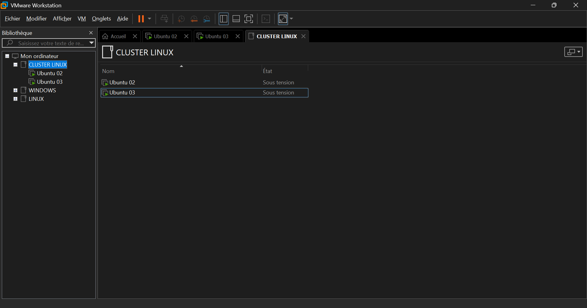
Groupe « CLUSTER LINUX » · Ubuntu 02 (node1) et Ubuntu 03 (node2) — état : Sous tension
1
Préparation de la base système
sur les 2 nœuds1.1 — Nommage des machines (hostname)
NODE 1
sudo hostnamectl set-hostname node1
exec bash
NODE 2
sudo hostnamectl set-hostname node2
exec bash
1.2 — Configuration réseau statique (Netplan)
Désactiver d'abord la config temporaire cloud-init si elle existe :
sudo mv /etc/netplan/50-cloud-init.yaml /etc/netplan/50-cloud-init.yaml.bak 2>/dev/nullFichier : /etc/netplan/01-network-manager-all.yaml
NODE 1 · 192.168.1.10
network:
version: 2
renderer: networkd
ethernets:
ens33:
dhcp4: no
addresses:
- 192.168.1.10/24
routes:
- to: default
via: 192.168.1.1
nameservers:
addresses: [8.8.8.8, 1.1.1.1]
NODE 2 · 192.168.1.11
network:
version: 2
renderer: networkd
ethernets:
ens33:
dhcp4: no
addresses:
- 192.168.1.11/24
routes:
- to: default
via: 192.168.1.1
nameservers:
addresses: [8.8.8.8, 1.1.1.1]
# Appliquer sur chaque machine
sudo netplan apply
1.3 — Résolution de noms locale (/etc/hosts)
Ajouter ces lignes à la fin de
/etc/hosts sur les deux machines pour la communication inter-nœuds sans DNS externe.192.168.1.10 node1
192.168.1.11 node2
📸 /etc/hosts commun + hostnamectl && ip a — node1
nano /etc/hosts
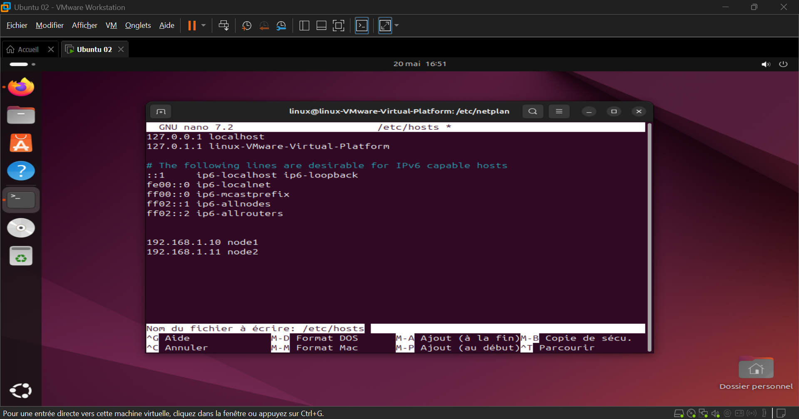
hostnamectl && ip a show ens33 — node1
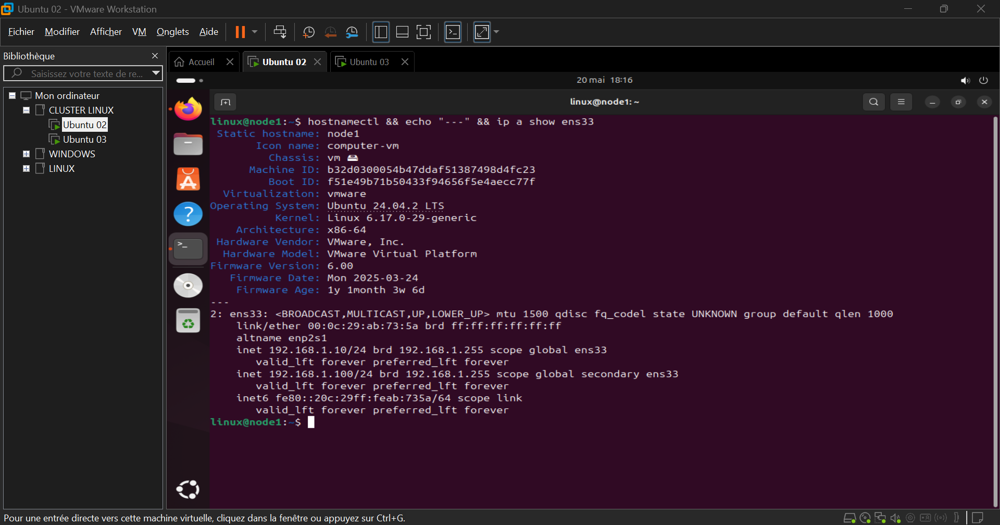
Gauche : nano /etc/hosts → 192.168.1.10 node1 / 192.168.1.11 node2 · Droite : hostnamectl (node1, Ubuntu 24.04.2 LTS) + ip a ens33 → 192.168.1.10/24 (physique) + 192.168.1.100/24 (VIP secondaire)
2
Installation et initialisation des services
sur les 2 nœuds2.1 — Installation des paquets
sudo apt update
sudo apt install pacemaker corosync pcs apache2 \
resource-agents-base resource-agents-extra -y
2.2 — Désactivation d'Apache (géré par Pacemaker)
Apache doit être contrôlé exclusivement par Pacemaker, pas par systemd. Ne pas le laisser démarrer automatiquement.
sudo systemctl stop apache2
sudo systemctl disable apache2
2.3 — Activation de pcsd + mot de passe hacluster
sudo systemctl enable --now pcsd
sudo passwd hacluster # même mot de passe sur les 2 nœuds !
📸 sudo systemctl status pcsd — node1 & node2
node1 (Ubuntu 02)
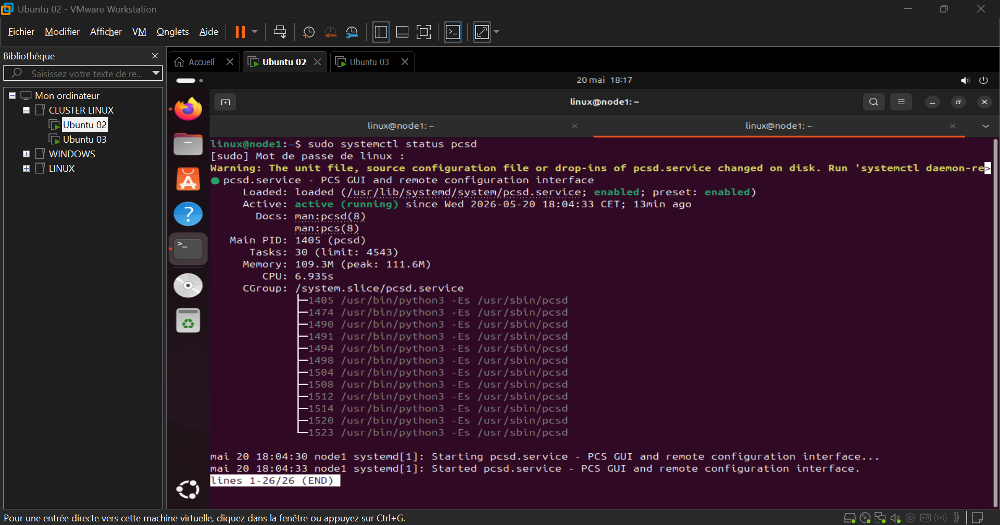
node2 (Ubuntu 03)
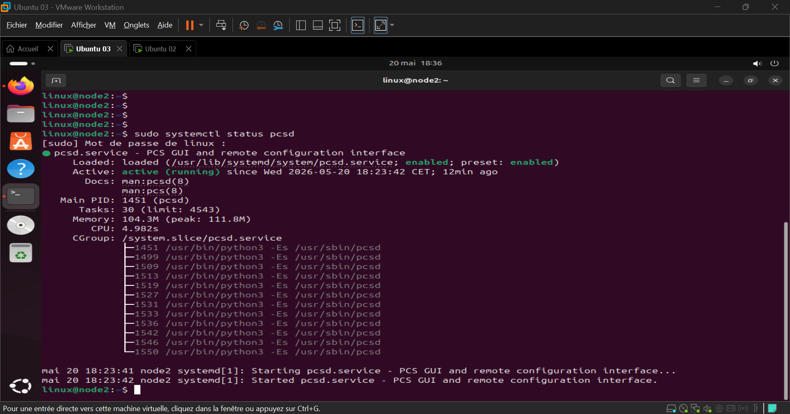
node1 : pcsd active (running) depuis 18:04:33 · node2 : pcsd active (running) depuis 18:23:42 — enabled sur les deux nœuds
3
Création et initialisation du cluster
node1 uniquement3.1 — Authentification des nœuds
sudo pcs host auth node1 node2 -u hacluster
3.2 — Génération de la config Corosync + création du cluster
sudo pcs cluster setup mycluster \
node1 addr=192.168.1.10 \
node2 addr=192.168.1.11 \
--force
3.3 — Démarrage et activation automatique
sudo pcs cluster start --all
sudo pcs cluster enable --all
📸 pcs host auth node1 node2 -u hacluster + pcs cluster start --all
pcs host auth → Authorized
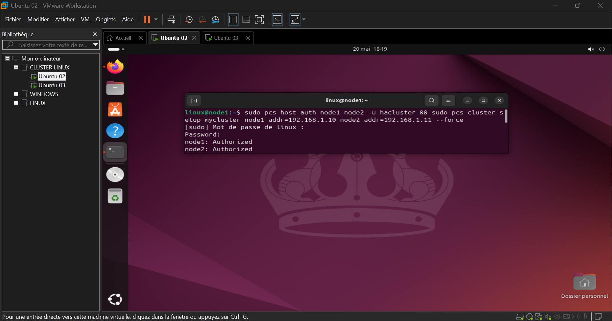
pcs cluster start --all
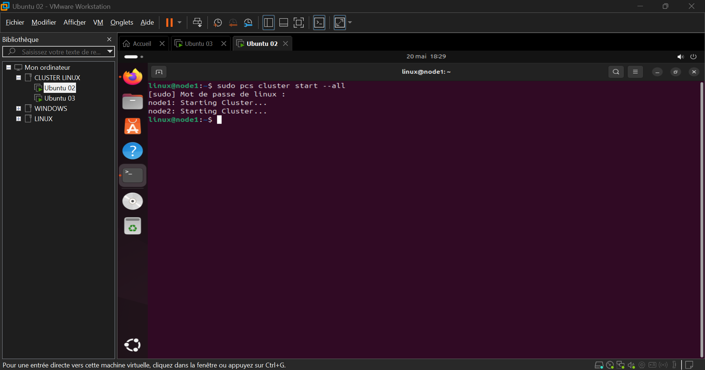
Gauche : node1: Authorized, node2: Authorized · Droite : node1: Starting Cluster... node2: Starting Cluster...
4
Configuration des propriétés et ressources
node1 uniquement4.1 — Propriétés STONITH et Quorum
Dans un environnement de démo/virtuel sans matériel STONITH, ces ajustements sont requis pour 2 nœuds uniquement.
# Désactiver la protection matérielle STONITH
sudo pcs property set stonith-enabled=false
# Permettre au nœud restant de fonctionner seul
sudo pcs property set no-quorum-policy=ignore
4.2 — Création des ressources
# Ressource 1 : IP Virtuelle flottante (VIP)
sudo pcs resource create vip ocf:heartbeat:IPaddr2 \
ip=192.168.1.100 \
cidr_netmask=24 \
op monitor interval=30s
# Ressource 2 : Serveur Web Apache
sudo pcs resource create webserver ocf:heartbeat:apache \
configfile="/etc/apache2/apache2.conf" \
op monitor interval=30s
4.3 — Groupement et contrainte de localisation
Le groupe garantit que la VIP et Apache basculent toujours ensemble sur le même nœud physique.
# Regrouper vip + webserver → webgroup
sudo pcs resource group add webgroup vip webserver
# Préférence pour node1 en fonctionnement normal
sudo pcs constraint location webgroup prefers node1=100
📸 sudo pcs status — état nominal (node1 maître)
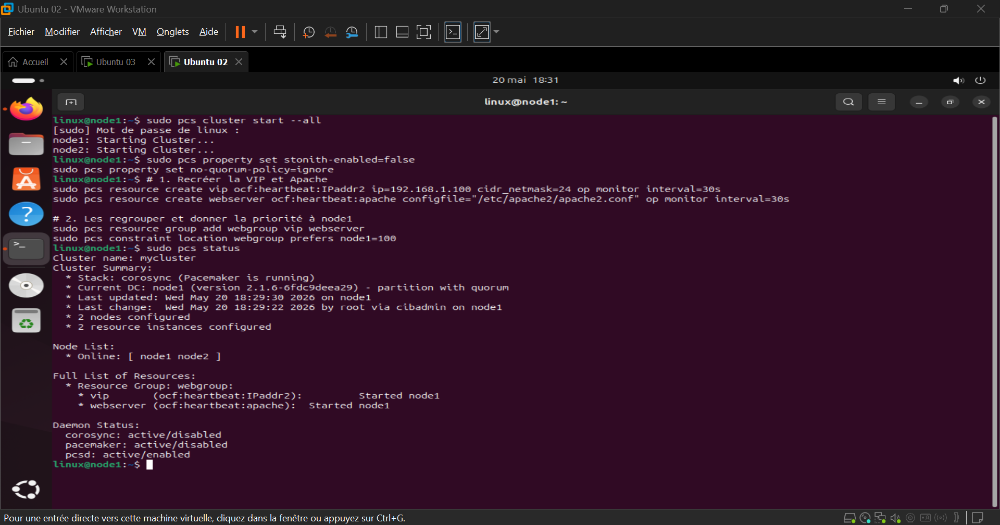
Cluster mycluster · Current DC: node1 · node1 Online, node2 Online · webgroup : vip (IPaddr2) + webserver (apache) Started node1
5
Tests de validation — Haute Disponibilité
cahier de recetteTest 1 · Fonctionnement nominal
Les deux machines sont actives — situation normale
Commande (sur n'importe quel nœud) :
sudo pcs status
✓ Résultat attendu
Node List:
• node1: Online
• node2: Online
Full List of Resources:
Resource Group: webgroup
vip (ocf::heartbeat:IPaddr2): Started node1
webserver (ocf::heartbeat:apache): Started node1Test web : accéder à http://192.168.1.100 → page Apache par défaut via node1
📸 Test 1 — pcs status + navigateur http://192.168.1.100
node1 Online, node2 Online, webgroup Started node1 · Apache2 Default Page « It works! » sur la VIP 192.168.1.100
Test 2 · Simulation de panne — Basculement (Failover)
Couper pacemaker sur node1 → vérifier la migration vers node2
Étape 1 · Simuler la panne sur node1 :
# Exécuter sur NODE 1
sudo systemctl stop pacemaker
Étape 2 · Vérifier le basculement sur node2 :
# Exécuter sur NODE 2
sudo pcs status
ip a show ens33 # doit afficher 192.168.1.100/24
✓ Résultat attendu sur node2
Node List:
• node1: OFFLINE
• node2: Online
Full List of Resources:
Resource Group: webgroup
vip (ocf::heartbeat:IPaddr2): Started node2 ← migré !
webserver (ocf::heartbeat:apache): Started node2 ← migré !Test web : http://192.168.1.100 reste accessible → node2 répond de manière transparente
📸 Test 2 — Failover : stop pacemaker node1 → basculement sur node2
Étape 1 — stop pacemaker node1
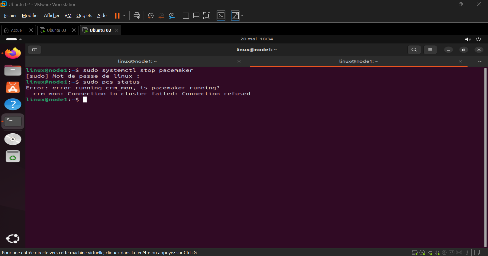
Étape 2 — hostnamectl node2
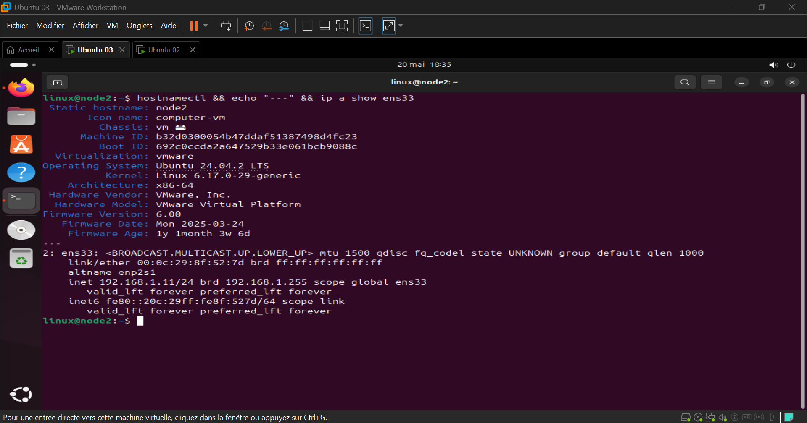
Étape 3 — pcs status (basculement)
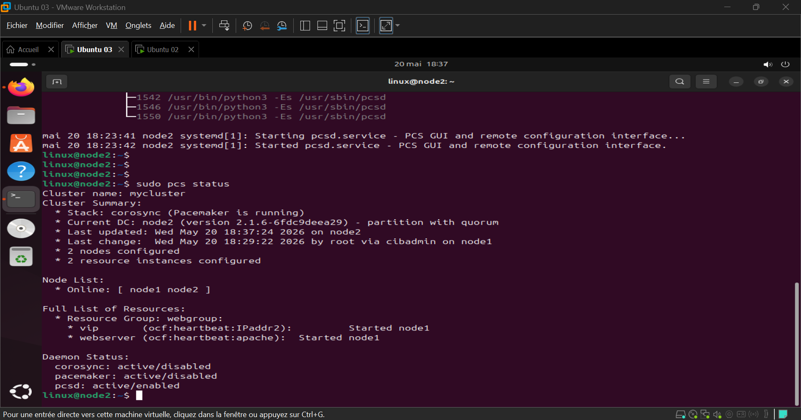
Étape 4 — pcs status + ip a (VIP migrée)
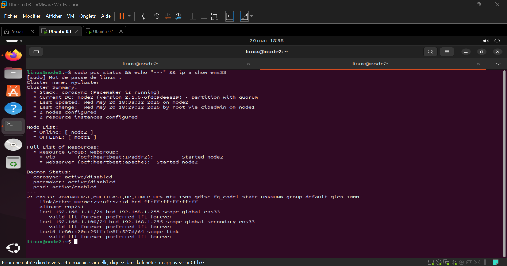
Étape 1 (node1) : pacemaker stoppé → Connection to cluster failed · Étape 2 (node2) : hostnamectl → node2, 192.168.1.11 · Étape 3 : pcs status → node1 OFFLINE, webgroup Started node2 · Étape 4 : pcs status + ip a → VIP 192.168.1.100 active sur ens33 de node2
📸 Résultat final — http://192.168.1.100 toujours accessible (node1 OFFLINE)
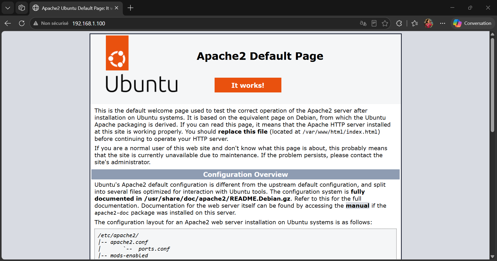
Apache2 « It works! » servi par node2 via la VIP 192.168.1.100 — haute disponibilité validée ✓
Rapport Technique · Cluster HA · Ubuntu 24.04 LTS
mycluster · node1 (192.168.1.10) ↔ node2 (192.168.1.11) · VIP 192.168.1.100